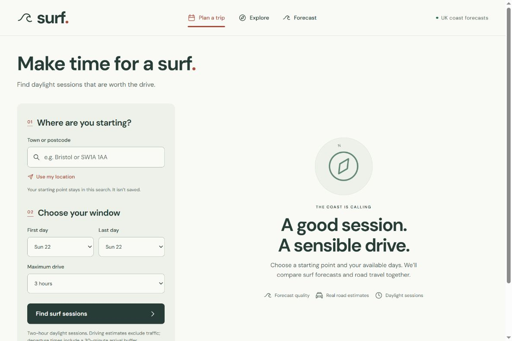

Surf Forecasts & Trip Planning
A live surf app for exploring UK breaks, comparing hourly conditions and finding daylight sessions worth the drive.

Explore project
Live project / Surf
A good session. A sensible drive.
I built Surf to bring the forecast and the journey into one place. Explore UK surf spots on a map, inspect hourly conditions and plan two-hour daylight sessions around your starting point, available dates and maximum drive.
Under the hood: a Java 21 and Spring Boot REST API combines Open-Meteo marine and weather forecasts with beach-specific surf-quality scoring. PostgreSQL stores forecast snapshots, with caching to reduce repeat provider requests.
The React and TypeScript frontend brings together spot exploration, forecasts and trip recommendations ranked by surf quality and road travel. The API returns up to 120 hours of forecast data, with explicit coverage and freshness information.
Visit the live Surf appForecast scores are deterministic estimates of surf quality. They are not observed conditions or a safety assessment.